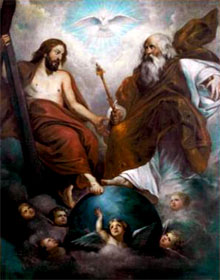
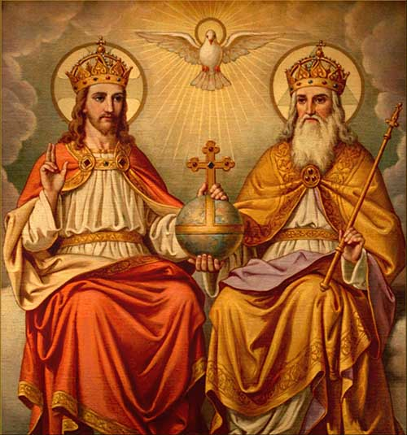
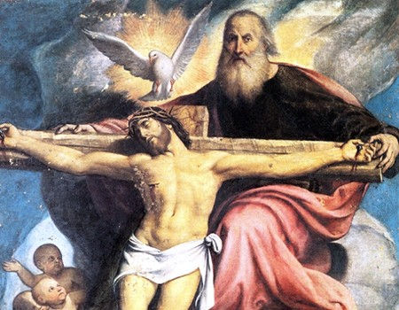
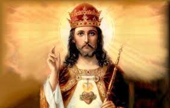

=IMAGENS=
A SANTÍSSIMA TRINDADE






INFORMAÇÕES
Este Site foi construído pelo Apostolado dos Sagrados Corações. Clique aqui ou no endereço abaixo para visitar o nosso PORTAL. Nele encontrará uma apreciável quantidade de Sites sobre o CRIADOR, o ESPÍRITO SANTO, JESUS DE NAZARÉ, sobre NOSSA SENHORA, os ANJOS do SENHOR e Sites que apresentam a Vida e Obra de diversos SANTOS. Todos eles elaborados com muito amor e dedicação, fundamentados na Sagrada Escritura, na Tradição Cristã, na Vida e Obra dos Santos e nas Manifestações Sobrenaturais, sobretudo, com a intenção de somente informar a Verdade.
http://www.apostoladosagradoscoracoes.com/
Desejando comunicar-se conosco, por favor clique na imagem abaixo e utilize o E-mail:

FIRMAS QUE DIVULGAM O SITE